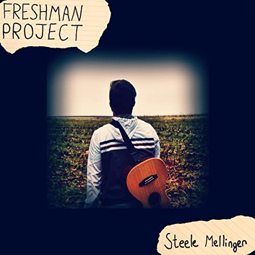

Steele City Music
Steele City Music is a company created by Jake "Steele" Mellinger.
Some of our services include: producing, mixing, mastering, recording, and much more.
Steele Mellinger
Steele is an artist from Pittsburgh who creates, performs, produces, mixes, and masters music. He is currently attending Belmont University with a major in Music Business and a minor in Audio Engineering.
Steele's music inspiration includes Bazzi, 6lack, John Mayer, and Frank Ocean.
